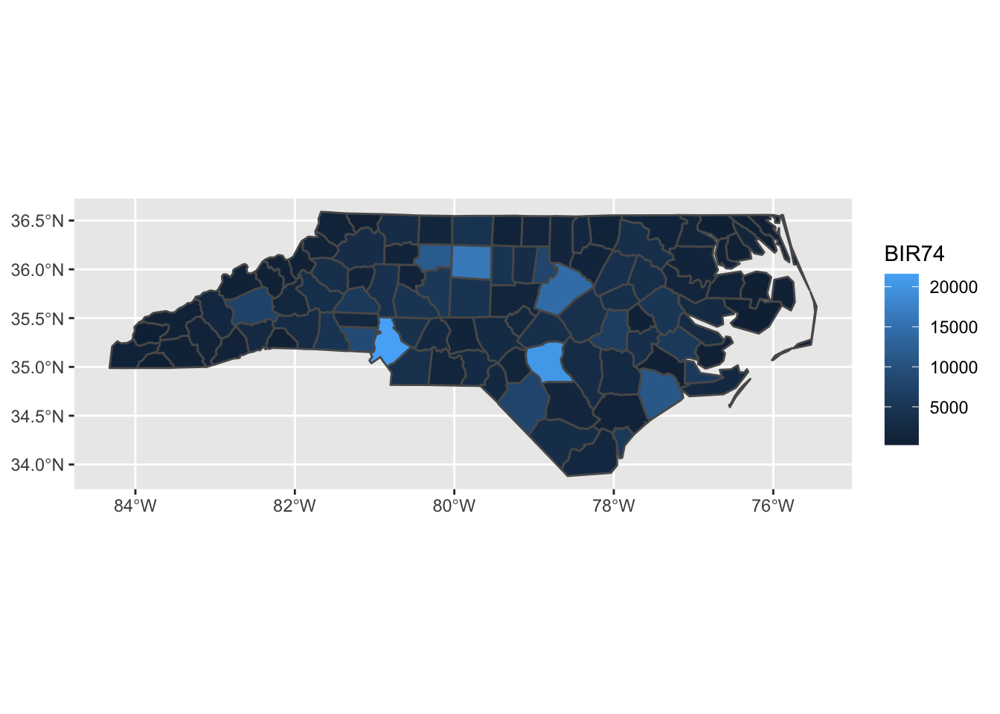
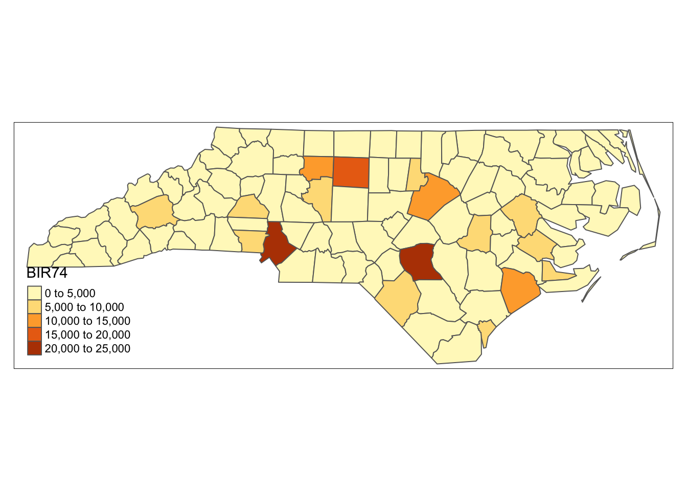
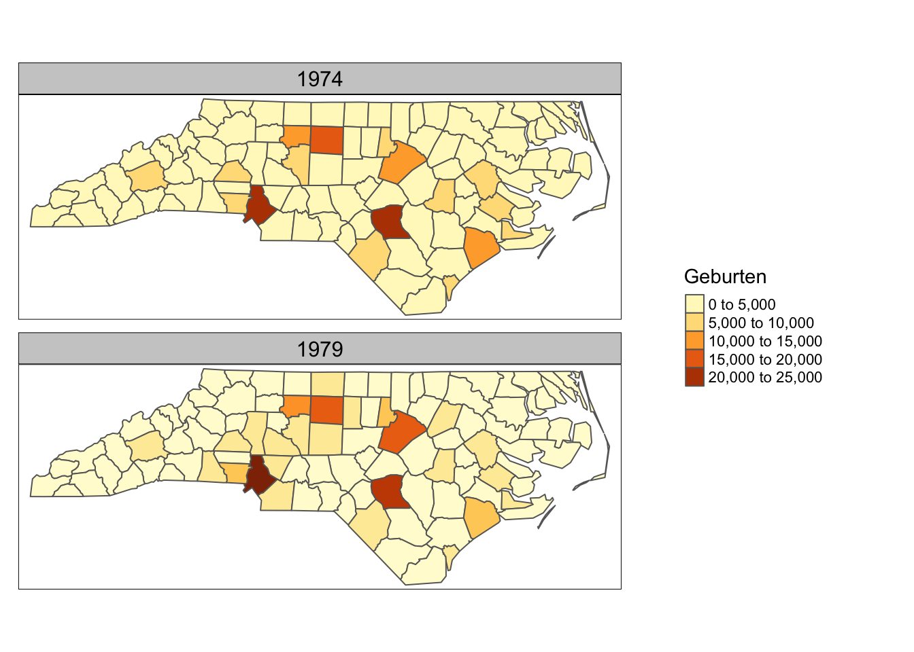
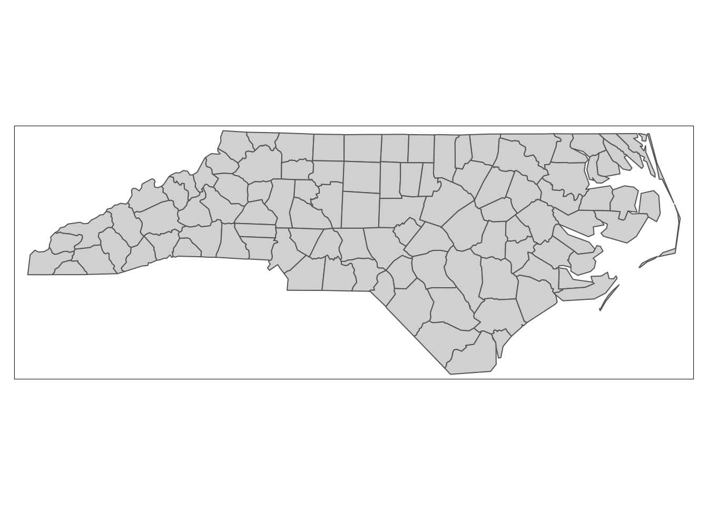
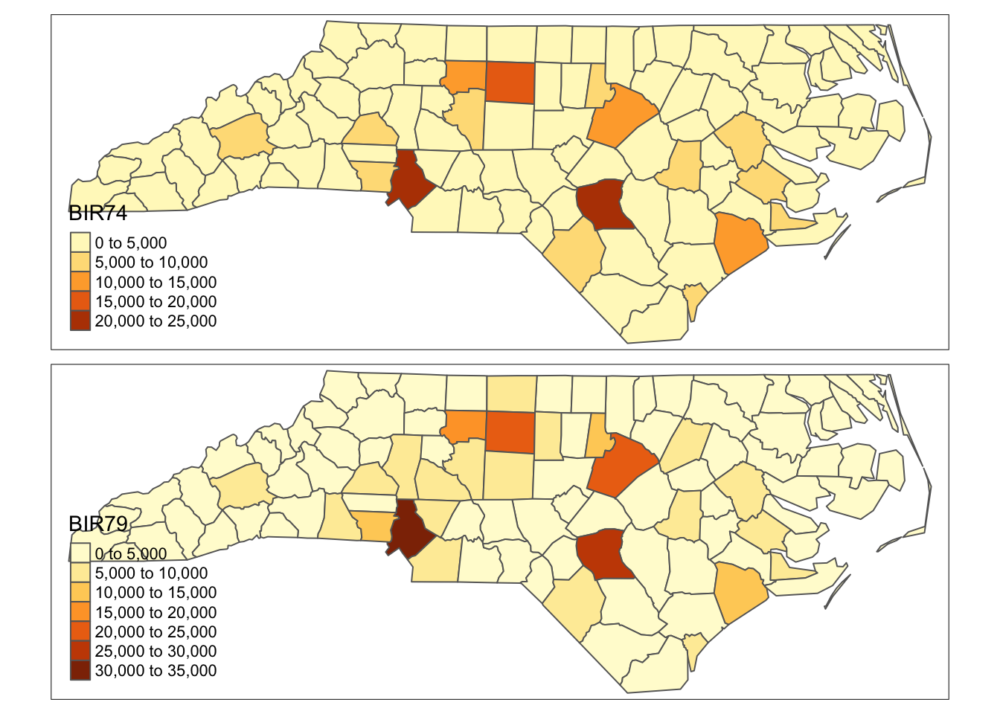
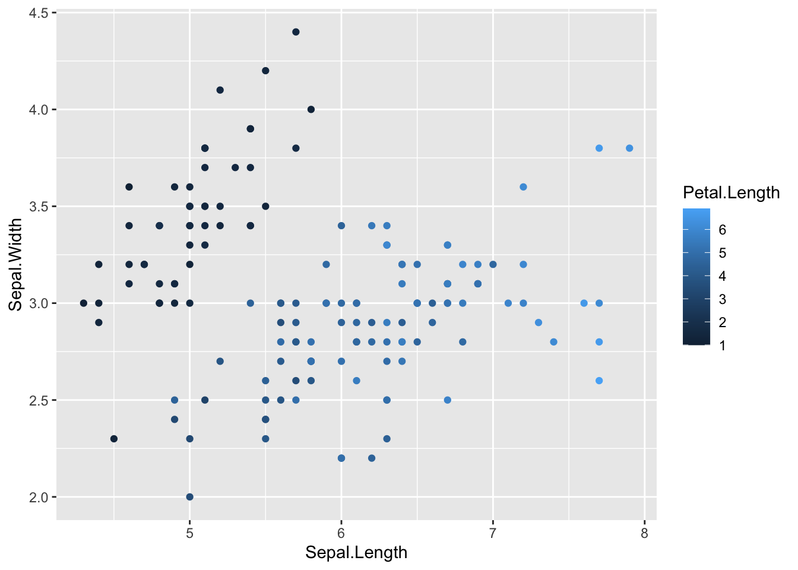

Sitzung 21 Interaktive Visualisierungen
21.1 Einleitende Bemerkungen
Bei den drei vorgestellten Paketen handelt es sich um sehr flexible Frameworks, deren ausführliche Besprechung (so wie ggplot2) problemlos ein eigenes Seminar füllen könnten. Hier werden sie nur anhand von einfachsten Beispielen schnell vorgestellt. Bei der weiterführenden Anwendung im Rahmen eines Projekts ist es sinnvoll, sich noch einmal zielgerichtet zu beraten.
21.2 Interaktive Karten mit tmap
21.2.1 Vorbereitung
Wir laden tmap und importieren einen Beispieldatensatz (simple features) mit medizinische Statistiken aus North Carolina:
library(tmap)
library(sf)
demo(nc, ask = F, echo = F)
## Reading layer `nc.gpkg' from data source
## `/usr/local/lib/R/4.1/site-library/sf/gpkg/nc.gpkg' using driver `GPKG'
## Simple feature collection with 100 features and 14 fields
## Attribute-geometry relationship: 0 constant, 8 aggregate, 6 identity
## Geometry type: MULTIPOLYGON
## Dimension: XY
## Bounding box: xmin: -84.32385 ymin: 33.88199 xmax: -75.45698 ymax: 36.58965
## Geodetic CRS: NAD2721.2.2 Bisher: Karten mit ggpot2
Wir haben schon gelernt, wie man mit dem Befehl ggplot() Karten erstellt.
Zur Wiederholung zeichnen wir eine Choropletenkarte mit den Geburtsraten der Counties von 1974:
library(ggplot2)
ggplot(nc) +
geom_sf(aes(fill = BIR74))
21.2.3 Neu: Karten mit tmap
Der Befehl qtm() (quick thematic map
) ist ideal um Geodaten schnell zu visualisieren:
qtm(nc, fill = "BIR74")
Für ausführlichere Karten folgt tmap einer sehr ähnlichen Logik wie ggplot2, hat aber einige Unterschiede in der Grammatik
:
tm_shape(nc) +
tm_polygons(col = c("BIR74", "BIR79"), title = "Geburten") +
tm_facets() +
tm_layout(panel.show = T,
panel.labels = c("1974", "1979"),
legend.outside = T, legend.position = c("center", "center"))
21.2.4 Interaktive Karten
Wenn wir den tmap_mode einmal wechseln,
tmap_mode("view")zeichnen wir ab sofort interaktive Karten:
qtm(nc)
Hier lassen sich dann auch interaktive Elemente wie Popups, Layer und die Hintergrundkarte bearbeiten. (Hier nur als technische Demonstration, besonders hilfreich finde ich es nicht:)
tm_shape(nc, cache = F) +
tm_basemap("OpenStreetMap") +
tm_polygons(col = c("BIR74", "BIR79"), id = "NAME", popup.vars = c("AREA", "CNTY_ID")) +
tm_facets(as.layers = T)
21.2.5 Weitere Informationen:
21.3 Interaktive Plots mit plotly
Plotly ist ein kommerzielles Produkt, das Framework lässt sich aber offen nutzen. (Verkauft werden sollen dann Dashboards, Beratungsleistungen und Infrastruktur für Firmenkunden.)
21.3.1 Bisher: Scatterplot mit ggplot2
Wir plotten den Beispieldatensatz iris:
ggplot(iris) +
geom_point(aes(x = Sepal.Length, y = Sepal.Width, color = Petal.Length))
21.3.2 Neu: 3D mit plotly
library(plotly)
plot_ly(iris, x = ~ Sepal.Length, y = ~ Sepal.Width, z = ~ Petal.Width, color = ~ Petal.Length)21.3.3 Weitere Informationen
21.4 Web apps mit shiny
Shiny ist das umfangreichste und flexibelste der hier vorgestellten Pakete und für das Erstellen von Web-Apps zur interaktiven Visualisierung von Datensätzen gedacht.
Visualisierungen mit Shniny können jedoch nicht als Teil einer statischen HTML-Seite angezeigt werden, sondern müssen zur Ansicht auf einem entsprechend konfigurierten Server laufen.
Wir haben in der Sitzung eine einfache Shiny-App erstellt und lokal angesehen, zur Veröffentlichung müsste sie jedoch z. B. auf https://shinyapps.io hochgeladen werden.